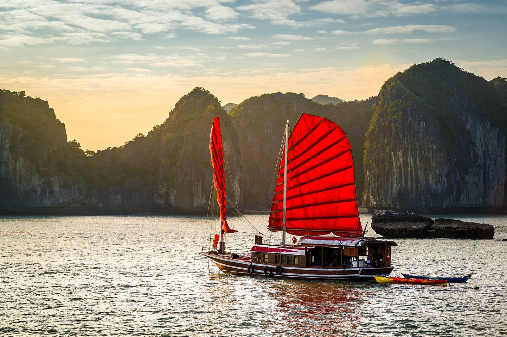
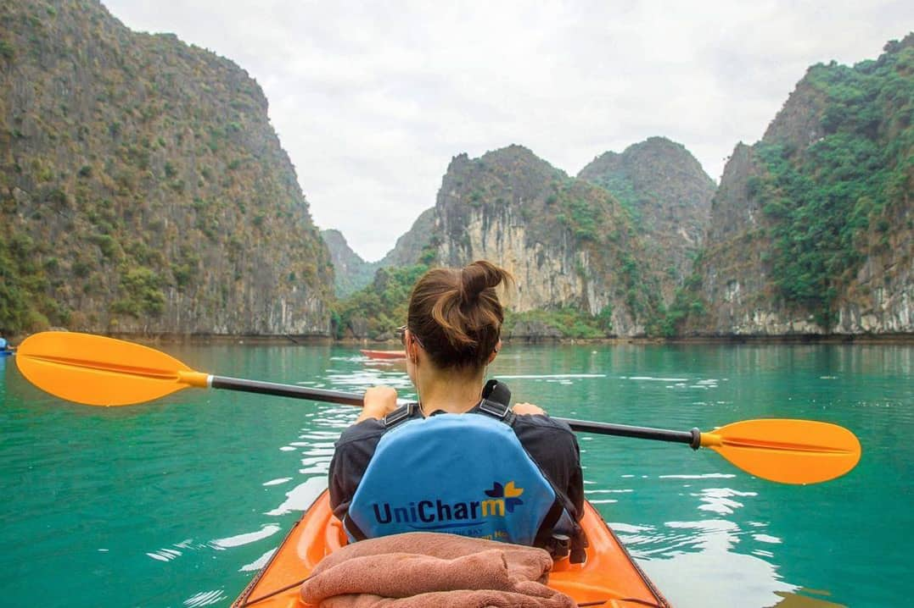

Jasper, Canada
Spirit island, located in the heart of Maligne Lake, Jasper was a spiritual place of healing for the rocky mountain tribe for over 2000 years before they were displaced in the 1900s. They believed that each mountain with a face in the hall of the gods(the mountains in front of spirit island) contains the essence of each god of each religion as well as all notable rocky mountain tribesmen.
In 2020, there was a forest fire in a nearby forest region of Lake Maligne. Because of that forest fire, the few remaining tribe members from that same rocky mountain tribe approached the Canadian government to get access to Spirit Island away since they believe that the forest fire was a punishment by their gods for being away from their spiritual home for so long. Now, the rocky mountain tribe works with the Canadian government to perform their spiritual healing once a year.
Photo Gallery

An kayak off the shore looking at Spirit Island

Camping on the shore of Lake Maligne

A man goes hiking through a beautiful winter scene.

The beach that borders Lake Maligne.

Boat Tours are offered throughout Lake Maligne.
Sofia, Bulgaria

Sofia is the capital city of Bulgaria, a country located in Eastern Europe. It is part of the European Union and the primary language spoken is Bulgarian. The city's population is around 1.3 million. In addition to its urban structures, Sofia also contains a mountain peak called “Vitosha”.
Vitosha is located 30 minutes from the capital's center, and can be reached by foot, car, and by lift. The peak has an elevation of 7,520 feet and during the summer months the average temperature is around 64 degrees fahrenheit. This makes it a great sight for any type of traveler who seeks the outdoors.
Photo Gallery

A cathedral during sunset in Sofia.

A crowded street with a mountain range in the background.

The view from the top of a scenic hike.

The tram that many people use for transportation in Sofia.

A city street lined with yellow bricks.
>Singapore

Singapore is a country located at the southern end of Malaysia. Despite the fact that Singapore is only 281.3 square miles and has a population of approximately 5.54 million, it has a thriving economy and is a strong player in the global market.
Singapore is famous for its city skyline, with a few landmarks such as the Marina Bay Sands Resort, Raffles Hotel, and the Esplanade. Additionally, Singapore has the highest rated airport in the world, with Changi Airport featuring many retail and dining options.
Photo Gallery

A view of Hawker food centres.

A water feature located in Changi Airport.

Massive gardens by the city.

Kayaking in the ocean off the coast of Pulau Ubin island.

A bridge to the sandy beaches of Sentosa Island.
Ha Long Bay, Vietnam

Ha Long Bay is a UNESCO world heritage site and a popular tourist destination in northeast Vietnam. The bay is famous for its crystal clear emerald colored waters dotted with limestone mountains that rise up from the water. Many tourists visit and take boat tours around the islands that tend to me named after their peculiar shape. For instance, tourists can take kayak expeditions around the Teapot islets, a set of islands shaped like teapots, or be rowed around Stone Dog, which appears to be shaped like a dog.
The Ha Long Bay region is popular for scuba diving, rock climbing and hiking, particularly in mountainous Cát Bà National Park. The nearest city is Hai Phong, which is approximately 75 km away. It is easier to reach Ha Long Bay by boat because the journey from Hai Phong to Ha Long Bay can take nearly 2.5 hours.
Photo Gallery
A tarditional style sailboat sailing on the Ha Long Bay.
Kayaking towards a group of islands on Ha Long Bay.

Scuba divers getting ready to dive in Ha Long Bay.

An island in Ha Long Bay known to look like a teapot.

A tourist cave in the Ha Long bay.
Auckland, New Zealand

Auckland is the largest city in New Zealand located on the Northern Island of the country. The city’s population is just below 1.7 million people. Auckland is known as the “City of Sails” for its plethora of sailboats and yachts. The vast amount of waterfronts and harbors are conveniently located for sailors to embark on their hobbies.
Aside from sailing and waterfronts, Auckland is also surrounded by 48 volcanoes and a few rainforests. The climate of Auckland is mild-temperate. The winters are not too cold (averaging 64 degrees Fahrenheit) and summers mildly harsh (around 80 degrees Fahrenheit).
Photo Gallery

A volcanic field in Auckland.

Eden park before a rugby game.

A war memorial in Auckland.

The tourist bridge that goes from the island to the ferry.

The famous Auckland Harbour Bridge at night.
Yellowstone

Yellowstone National Park, established in 1872, is a breathtaking expanse of pristine wilderness...
Yellowstone National Park, established in 1872, is a breathtaking expanse of pristine wilderness that spans Wyoming, Montana, and Idaho. Its remarkable landscape features lush valleys, towering mountain ranges, and serene lakes, all framed by dense forests and meandering rivers. This natural beauty serves as a backdrop to an incredibly diverse array of wildlife, including bison, elk, grizzly bears, and wolves, making it a haven for nature enthusiasts and wildlife lovers.
Exploring Yellowstone means embarking on journeys through its captivating landscapes, from the geothermal wonders like Old Faithful and colorful hot springs to the sweeping vistas of Lamar Valley. The park's unique combination of unspoiled wilderness and abundant wildlife offers visitors the opportunity to witness these magnificent creatures in their natural habitat, creating unforgettable moments and fostering a deep appreciation for the untamed beauty of the American West.

Mammoth Hot Springs has a number of actively forming Travertine terraces.

The drive to Lamar Valley requires some dangerous roads. But the result is amazing sunset views.
The multicolored layers get their hues from different species of bacteria living in the cooler water around the spring.
The buffalo were so common along the roads in Yellowstone that our mantra became "If it ain't lickin the car, we aren't stopping."

If you can handle the odor, the Yellowstone Sulphur Springs is a great place to hike.